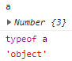
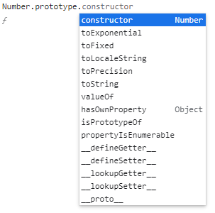
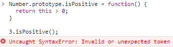

內建函式建構子
前一堂課介紹了透過函是來建立物件的函式建構子 Function Constructor，這堂課將進一步介紹”內建”的函式建構子
new Number()
直接看到一段範例如下:
透過內建的函式 Number 來建立一個物件，內建的 Function Constructor 也有按照大寫開頭的慣例
1 | var a = Number(3); |
當我們透過瀏覽器的 console 查看 a 的值時，它不是一個數字 number，還記得前面提到 function constructor 會建立的會是一個物件，所以得到的 a 會是一個包含數字 3 的 object。

透過這些內建的 function constructor 所建立的物件會有一些內建的 method 可以使用，只要在瀏覽器的 console 中透過 Number.prototype 就可以查看

1 | a.toString(); // '3' |
不透過關鍵字 new 我們也可以單純使用 Number() 來將 String 轉為 Number
1 | var a = Number('3'); |
new String()
接著看到第二個範例:
我們透過 String 來建立一個新的物件
1 | var a = new String('John'); |
透過 function constructor 所建立的 object 同樣會有一些預設的 method，同樣可以透過 String.prototype 來查看，但如果直接這麼使用會發現結果不如預期
1 | String.prototype.indexOf('o'); // -1 |
總結以上兩個範例，不管使用的 function constructor 是哪一種，所建立的只是長得像原始型別 primitive 的 object，並提供許多預設的 method 供我們使用。
另外有一點很重要的是，我們在開發時常透過 .length 來取得字串的長度，但仔細想想，字串 String 是原始型別 primitive，並不是 object，所以並不會有 property 和 method，但當我們對 primitive 的值這麼做時，JavaScript 會自動幫你的值進行物件般的處理，如下:
1 | console.log('John'.length); // 4 |
為內建的 Function Constructor 新增屬性和方法
當我們透過內建的 function constructor 建立物件時，會有許多預設的屬性和方法供我們使用，但在 JavaScript 中能做的不僅如此，我們還可以在這些內建的 function constructor 上新增屬性和方法
1 | String.prototype.isLengthGreaterThan = function(limit) { |
在上面的範例中，我們在 String.prototype 上新增一個方法 isLengthGreaterThan，其函式中的 this 就是新建立的物件，而這裡則是 John 這個字串被當作物件般處理，結果是 4 > 3，所以回傳 true。
自動將原始型別轉為物件處理
那麼如果我們對數字 number 也這麼做會得到什麼呢 ?
1 | Number.prototype.isPositive = function() { |

結果會得到 error，因為 JavaScript 只會將字串 String 自動轉為物件般處理，所以如果是其他原始型別，只能透過 function constructor 建立物件才能為它擴充屬性與方法。
1 | var a = new Number(3); |
避免都使用 Function Constructor 建立原始值
即便以上透過 function constructor 來建立原始值的物件看似方便好用，但在開發時，除非你很清楚這麼做的目的，否則都建議直接使用原始型別來建立，讓我們透過一段範例來了解為什麼要這麼做。
首先，分別使用 primitive 和 function constructor 來建立數字 3，當我們透過雙等號 == 比較時，會得到 true，因為透過 == 比較時，JavaScript 會發現等號兩側不同型別，因此會幫我們自動轉型，所以得到 true 的結果，反之三等號 === 不會自動轉型，所以得到 false。
1 | var a = 3; |
所以在開發時，使用 function constructor 必須有很明確的目的，否則盡量單純使用 primitive 建立原始值即可
Moment.js
這裡介紹一個處理 Date 很有名的 Library - Moment.js，它就是透過 Date 這個 function constructor 提供許多關於日期的方法。